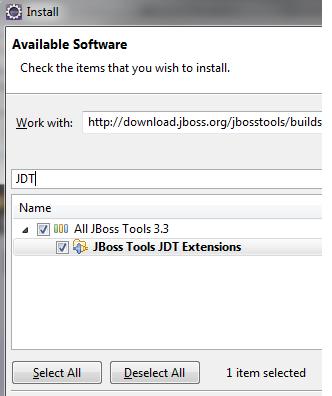
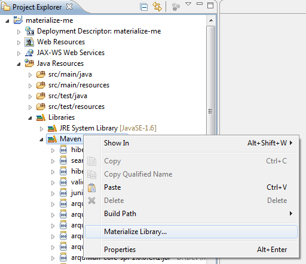
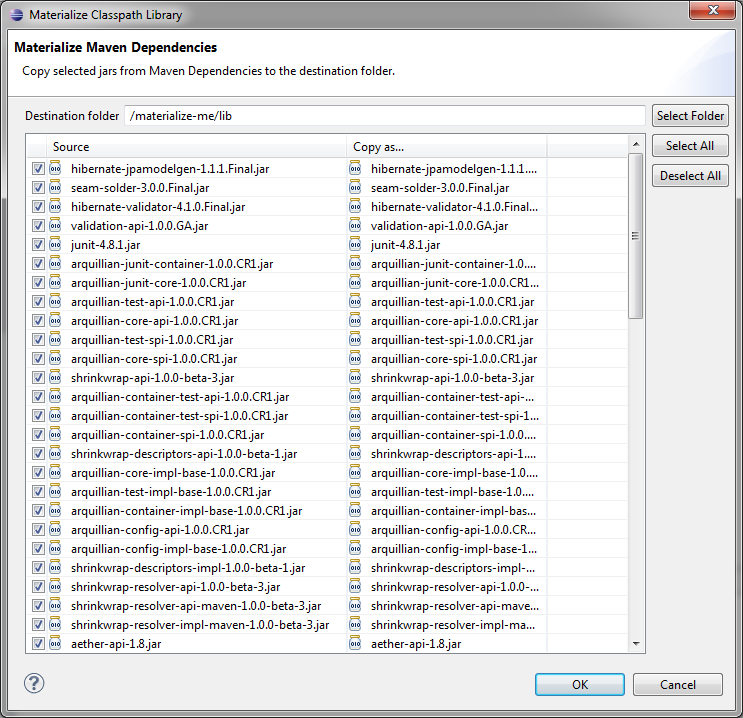
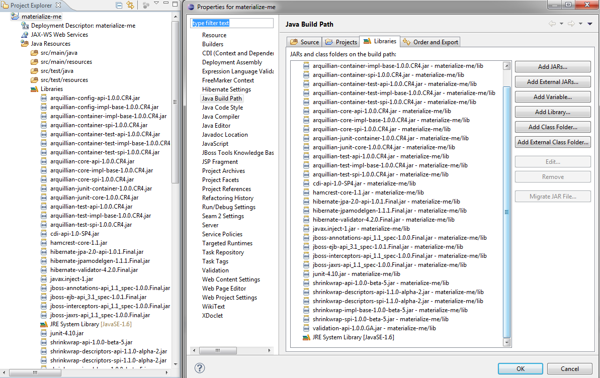

< Main Index JST/JSF 3.3.0.M4 >
General |
|
| Materializing Classpath Library |
An experimental new feature allows JBoss Tools users to Materialize Classpath Libraries. A Classpath Library is a virtual container added to the classpath, referencing jars in a portable way (avoiding direct absolute path references from the project). Materialization means jars listed in any Classpath Library can be copied under a project folder and referenced directly under the project classpath, instead of using said Classpath Library. The source Classpath Library is then removed from said classpath. This feature can be useful if you want to compile/run a project without Maven (or Ivy or any other dependency management tool that exists), for example. In order to use this new feature, you need to install the JBoss Tools JDT Extensions feature : To use it, right-click on a Classpath Library from one of your Java projects (In the Project Explorer view for example, go under Java Resources > Libraries) and select the "Materialize Library..." menu : This will open a new dialog window in which you can choose the destination folder into which will be copied the selected jars : 
Once materialized, jars are copied and referenced directly in the classpath, the Classpath Library is removed. in the case of Maven-powered projects, the Maven nature is removed, thus disabling the Maven builder. If you want to enable the Maven nature back on, just right-click on your project and select Configure > Convert to Maven Project Feedback on this feature are very welcome. You can follow existing related issues using this link. Please use the "materialize_library" label when submitting new issues. Related Jira : JBIDE-8972 |
|
|
|